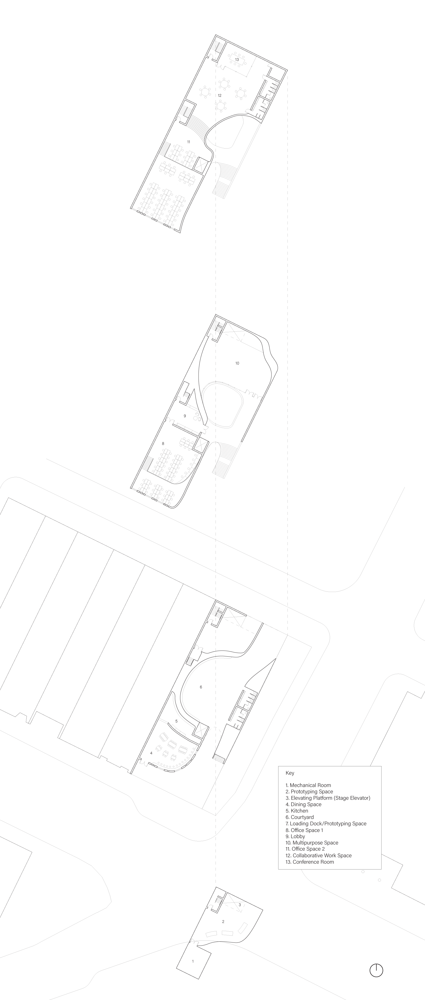
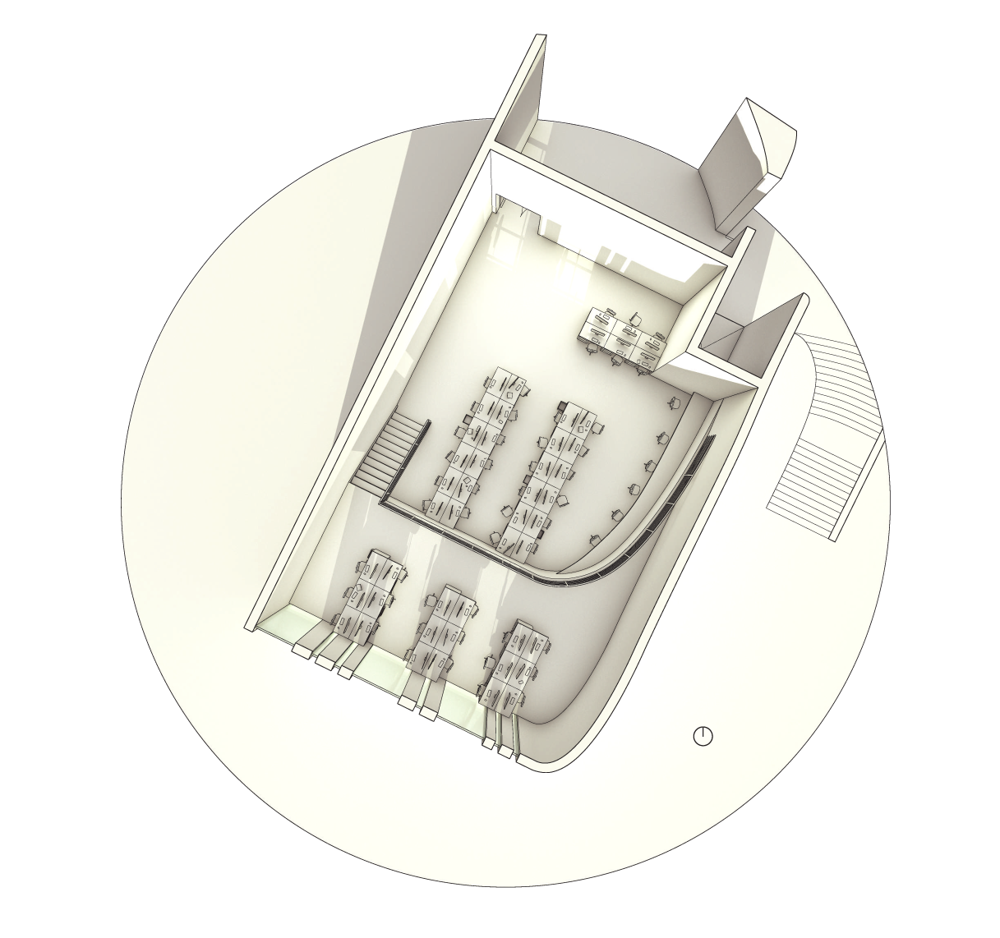
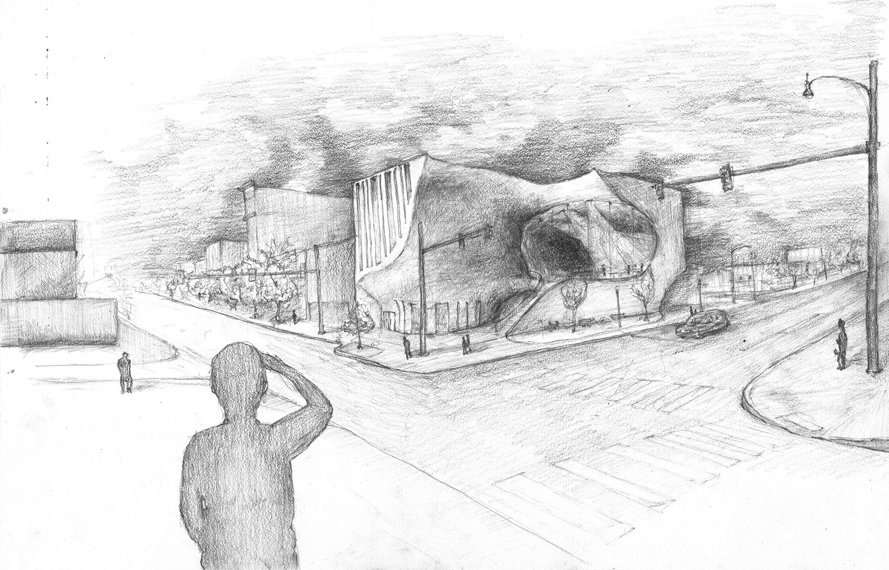
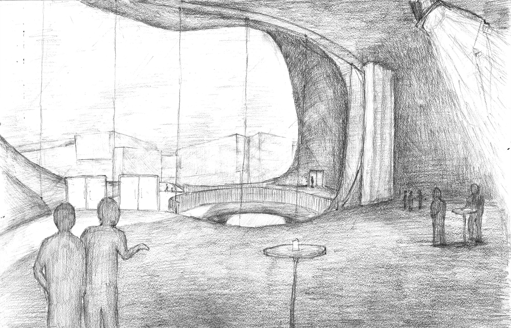
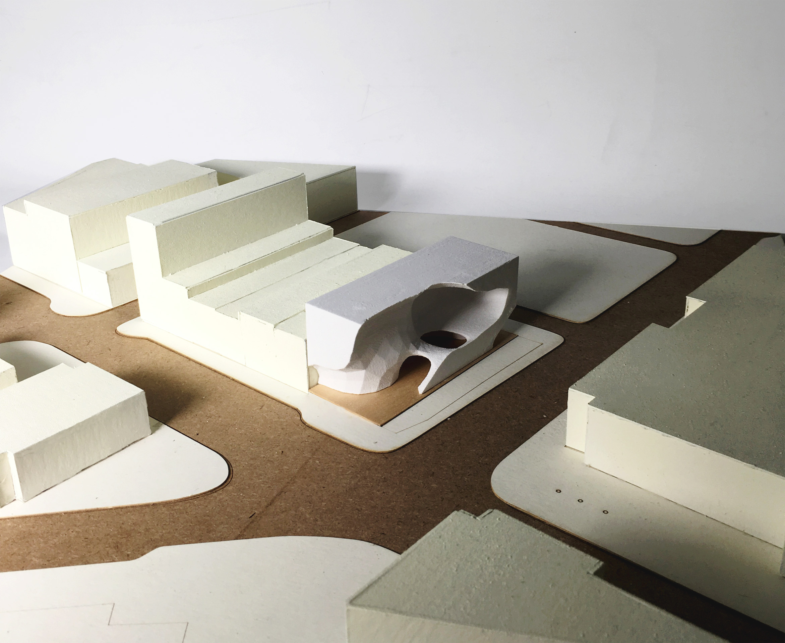
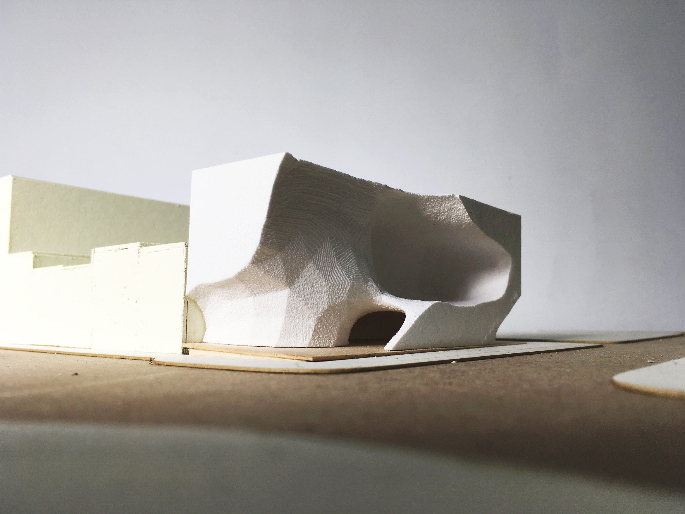
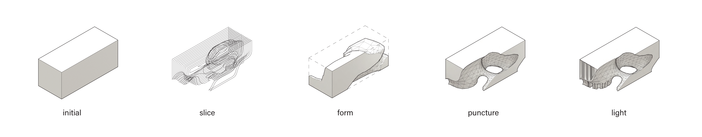

Erosion
2018
PITTSBURGH, PA
Professor Jeremy Ficca
Adjunct Professor Eddy Man Kim
East Liberty is a culturally diverse neighborhood located along eastern Pittsburgh, Pennsylvania. The site is situated just in between the gentrification line, amist older commercial buildings, a Target, the East Liberty Presbyterian Church, Bakery Square (home of Pittsburgh’s Google office), and a busway that links directly to Downtown Pittsburgh. In this rich environment, of both cultural vibrance and cultural sensitivity, students were required to design an office building for a widget company. This office requires two large office spaces, a prototyping space, a dining space (choice of public or worker only), a multipurpose space for large gathering, and a courtyard.
The form of the building was designed through several sectional slices to allow for a much more spatial analysis of the architecture. From this form, slight edits were made according to what the program desired. The negative space formed from the stacked slices provided the most open spaces.
In the upper floors of the building exists more private programmatic spaces such as the offices and multipurpose space. The central multipurpose space is celebrated as the central void which was formed from the “erosion” of the rectangular datum of the site. This monumental space can be used flexibly due to the large space the cave-like form provides, and even more so thanks to the elevating platform which rises from the basement storage, to the prototyping space, and finally to the stage of the versatile room. Moreover, curtains can be moved to either flood the space with natural light for more public events or closed and the room filled with artificial light for private events. The prototyping space is located on the first floor to provide easy access to a docking space from the service road, however, this space is only accessible from the second floor.
Sensitive to the flow of this area, “Erosion” keeps the lower levels of the office open to the public. The office building is open to both ends of the site, allowing entry from both ends of the area, the front catering to the busway and the back opening up to both residences and a public parking lot. In the center is an open courtyard to help connect the hyper-organic architecture back to the community.
“Erosion” is about heeding to the ebb and flow of a population while also acknowledging the accelerating development of the community.
 detailed section
detailed section

labeled floor plans

light rendered, perspective plan of second floor office

exterior render

interior render

final parti model in 1/16" scale

final parti model in 1/16" scale
 cast rockite process model in 1/8" scale
cast rockite process model in 1/8" scale

 process renders, slices, sketches, and parti diagram
process renders, slices, sketches, and parti diagram